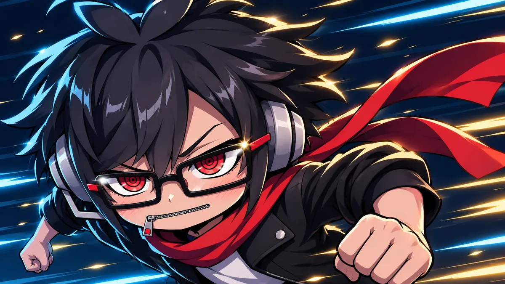
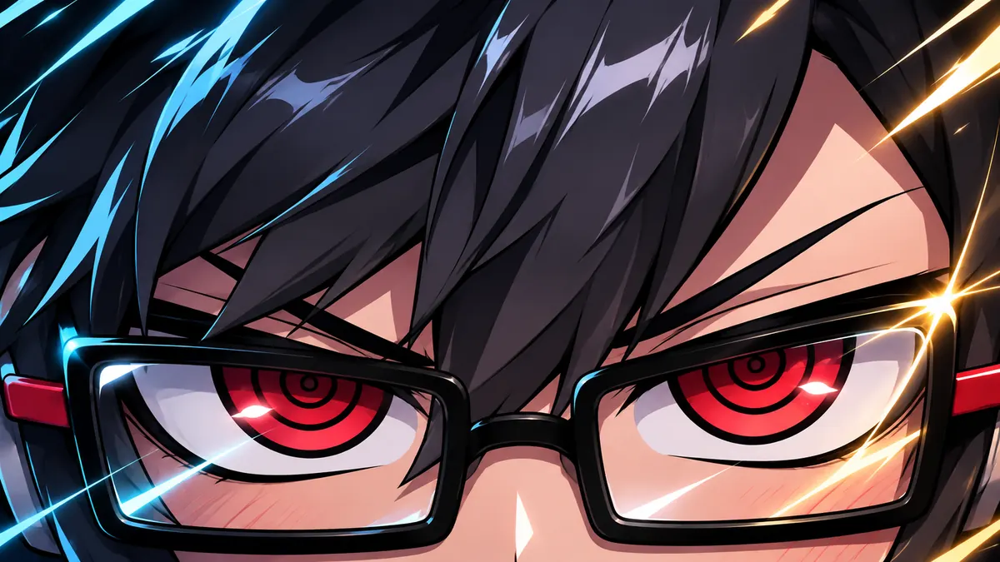
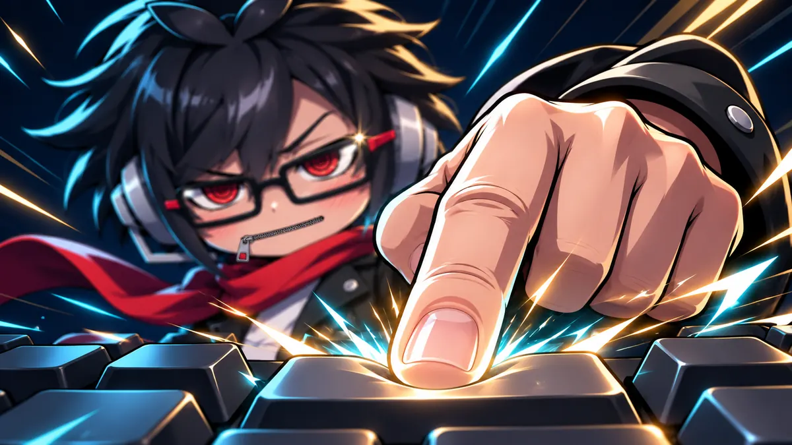
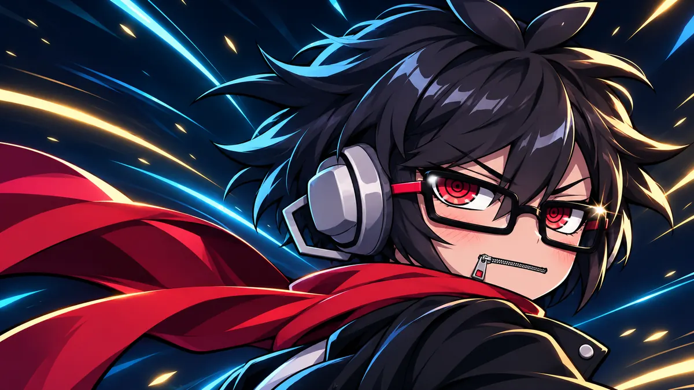
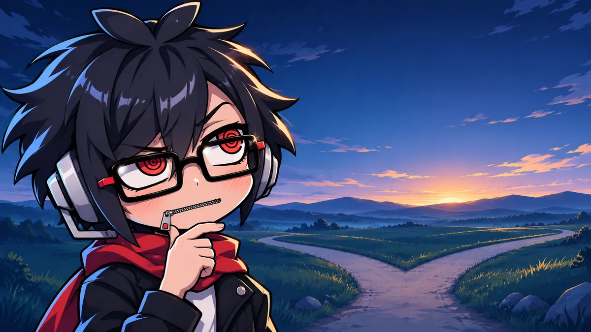
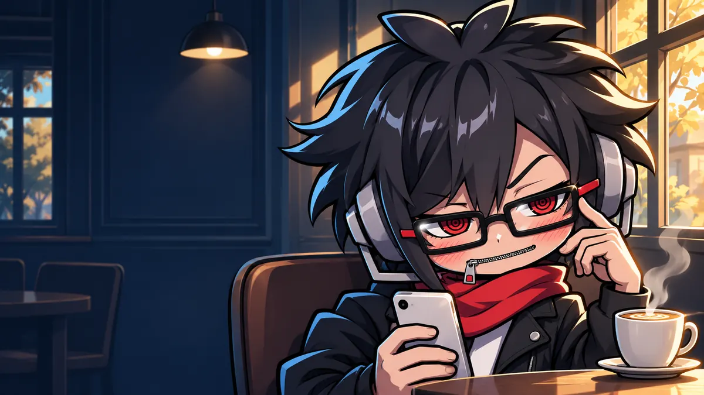
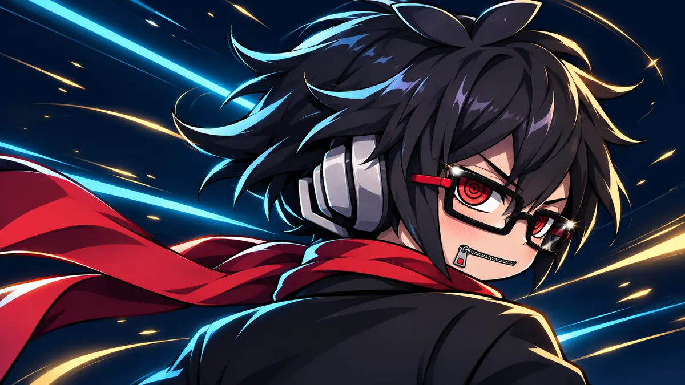

投稿の準備は、Museに任せる。
あなたは、伝えたいことに力を使う。リサーチから下書き、予約投稿まで回す「Threadsダッシュボード」
テスター募集
Threadsを続けたいなら、投稿の準備を、ぜんぶ自分でやるのはやめてください。
……いきなり何を言ってるの、と思いますよね（笑）。でも、本気です。
- リサーチ。
- ナレッジ収集。
- 下書き。
- 分析。
どれも大事な仕事です。ただ、準備を終えたころには、伝えたかったことをじっくり考える余裕が残っていない。そんな日が重なっているなら、任せられる仕事を見直してみませんか。
もし、あなたが眠っている間に、リサーチもナレッジ収集も下書きも進めておいてくれる相棒がいたら。
朝、集まったネタを読んで、「この話なら、自分の経験も伝えられそう」と考える。下書きを読みながら、伝えたいことを足して、しっくりくる言葉に直していく。準備ではなく、発信の中身に力を使えるようになります。
その相棒が、AIのMuseです。そして、Museの毎晩の仕事をひとつの画面にまとめたのが「Threadsダッシュボード」です。
こんな毎日になっていませんか
投稿を続けようと決めたのに、気づくとこうなっている。
- 「リサーチしているうちに、書く時間がなくなった」
- 「伸びている投稿は集めた。でも、自分が何を書くかは決まらない」
- 「書くので精いっぱいで、分析まで手が回らない」
- 「分析したいのに、また次のネタ探しに追われている」
投稿を届けたくて始めたのに、準備をこなすだけで一日が終わってしまう。それでは、続けるのが苦しくなりますよね。

続かないのは、あなたのせいじゃない。
投稿が続かないと、「もっとがんばらなきゃ」と思ってしまいませんか。
でも、リサーチ、ナレッジ収集、下書き、分析、予約投稿。その全部を、仕事や家のことの合間にひとりで続けようとしているなら、負担は小さくありません。
センスや根性を疑う前に、毎日の準備の抱え方を見直してみてください。
自分で抱えていた仕事を任せられたら、伝えたいことを考える余裕は、つくれます。

スイッチ、オン！準備はMuseが回す。
そこで、毎日の準備をMuseに任せてみませんか。
「AIには、もう下書きを頼んでいる」という人もいますよね。それでも、リサーチやAIへの指示は、毎回あなたが考えていませんか。
ここで任せたいのは、その毎日くり返している準備です。
Threadsダッシュボードでは、Museが毎晩、決まった準備を進めておきます。
- リサーチ。
- ナレッジ収集。
- 下書き。
- 分析。
あなたが声をかけなくても、毎晩です。出す投稿を決めて予約しておけば、その時刻に投稿までしてくれます。
「何を書こう」と探し続ける代わりに、「この話に、自分なら何を足せるだろう」と考える。準備を任せて生まれた余裕を、そこに使ってほしいんです。

朝には、下書きがそろってる。
たとえば、朝の投稿づくりを思い浮かべてみてください。
ダッシュボードを開く。夜のうちにリサーチした投稿とナレッジ、それをもとにした下書きが、もうそろっている。
- 「この話なら、自分の経験も添えられそう」
- 「ここは、いつもの自分の言い方に直したい」
そう考えながら読んで、言葉を整えて、出す投稿を決めたら予約投稿に入れる。あとは、投稿の時刻を気にせず過ごせます。
夜、ネタを探してThreadsの中をさまよう時間が減る。空いた時間で、コメントにていねいに返したり、プロフィールを見直したり、次に話したいことをじっくり考えたりできます。
準備を終えることだけに追われず、伝えたかった話に向き合う。そんなふうに、Threadsに使う時間を変えてみませんか。

このまま、ぜんぶ抱える？
反対に、今のやり方のままだと、どうなるでしょう。
夜、ネタが決まらないまま、時間だけが過ぎていく。なんとか出した投稿も、分析する余裕がないまま、次の準備に追われる。忙しい日が続いて投稿が止まり、取り戻そうとして、睡眠を削る。
そして気づけば、「何を伝えたいか」を考える時間が、いちばん後回しになっている。
時間が足りないのは、たぶんこれからも同じです。でも、準備のやり方は見直せます。
Threadsダッシュボードで変わること
毎日の準備がどう変わるのか、見ていきましょう。
リサーチは、Museが毎晩すませておく
Museが毎晩、今伸びている投稿をリサーチしておきます。あなたは、探すところからではなく、集まった投稿を読むところから始められます。探していた時間を、「どうしてこれが読まれたんだろう」と考える時間に回せます。
ナレッジが、たまっていく
投稿のネタになるナレッジも、Museが調べてためていきます。読んでいて、「自分もここでつまずいた」「この話には、別の見方もある」と感じることはありませんか。その気づきから、あなたが話したいことを考えられます。何も浮かばないまま画面を眺める代わりに、考えるきっかけとして使ってください。
下書きから考え始められる
リサーチとナレッジをもとに、Museが下書きを用意しておきます。書きたいことはあるのに、最初の一文が出てこない日はありますよね。下書きを読んで、「この順番なら伝わりそう」「ここには自分の経験を足したい」と考える。しっくりこないところは、あなたの考えに合うように直していく。最初の文章をひねり出すところからではなく、伝えたい話に整えるところから取り組めます。
予約しておけば、投稿までおまかせ
出す投稿が決まったら、予約しておくだけ。あとはその時刻に、ダッシュボードが投稿してくれます。投稿の時間に合わせてスマホを開く必要は、もうありません。
分析を、次の一本につなげられる
これまでの投稿の分析も、Museがまとめておきます。投稿して終わりにせず、どの投稿に反応があったかを確かめられます。「この話題は、もう少し掘り下げたい」「次は、違う伝え方を試してみようか」。分析を見て終わりにせず、次の投稿を考える材料として使ってください。
最後に決めるのは、あなた
準備を任せても、発信まで手放すわけではありません。「この話は伝えたい」「この言い方は自分には合わない」。そう感じたことを、そのまま文章に反映してください。どの下書きを出すかも、いつ出すかも、決めるのはあなたです。
一緒に、作りませんか。
Threadsダッシュボードは、まだ完成していません。だから今回は、売るのではなく、一緒に作ってくれるテスターさんを募集します。
オプチャでテスターの話を少しだけ出したときには、こんな声が届きました。
- 「絶対みたいです」
- 「是非是非是非是非是非お願い致します」
- 「是非テスターになりたいです！」
ありがとうございます！！ お待たせしました。
完成前のダッシュボードを、自分のThreadsで試せる
説明を読んで「便利そう」と思うだけでは、自分の投稿づくりにどう役立つかまでは分かりません。毎晩の準備をMuseに任せると、自分の取り組み方がどう変わるのか。あなたのThreadsで、ひと足先に確かめてみてください。
下書きから、自分の話を考えてみる
ナレッジを読んだとき、話したいことが浮かぶか。下書きがあると、自分の経験を足して書き進められるか。ただ文章が用意されるだけでなく、それを自分の発信にどう使えるかまで、実際の投稿づくりで試せます。
分析を、次の投稿に使ってみる
投稿を続けるだけで精いっぱいだと、分析は後回しになりがちですよね。Museの分析をもとに、次に深めたい話や、試したい伝え方が見えてくるか。リサーチから予約投稿、分析まで、自分の発信に役立つかを確かめられます。

浮いた時間、何に使う？
投稿の準備に、毎日どれくらいの時間を使っているでしょうか。
リサーチ、ナレッジ収集、下書き、分析、予約投稿。ひとつひとつは短くても、毎日続ければ、ひと月でかなりの時間になります。
準備も、発信には欠かせません。ただ、そのせいで「読む人に何を伝えるか」を考える時間がなくなっているなら、任せられる部分は任せていいはずです。
- たとえば、読者からのコメントを読み返す。
- 自分がつまずいた経験を整理する。
- 下書きに、自分だから話せることを足す。
どこで迷って、何を試して、どう考えたのか。そうした経験を、下書きに足してみてください。集めたナレッジだけでは書けない、あなたの話になります。
自分でできる作業でも、任せたほうがいいことはあります。空いた時間を、あなたにしか書けないことに使えるからです。
あなたなら、準備に使っている時間を、何に使いたいですか。

読むより、使ってみて。
「便利そう。でも、自分のThreadsではどうだろう」
そこが気になっているなら、朝、下書きを読んでいる自分を思い浮かべてみてください。どんな経験を足したいですか。準備を任せて空いた時間で、何をしたいですか。
今回は、その使い心地を実際に確かめながら、一緒に作ってくれるテスターの募集です。
説明を読んで終わりにせず、自分の発信で試してみたい。そう思ったなら、今、応募してください。
最後に
準備に追われて、伝えたいことを考える時間がなくなっている。もしそう感じているなら、そのやり方は変えられます。
毎晩の準備はMuseに任せて、あなたは「何を伝えるか」に力を使う。準備をMuseに任せる毎日を、一緒に作っていきませんか。
使ってみたいと思ったら、下のボタンから応募してください。